Computing with Clojure
Press T to toggle slide-show mode.
Table of Contents
1 Computing with Clojure

Alan Dipert & Clinton Dreisbach
Relevance, Inc.
thinkrelevance.com
2 Welcome
2.1 Welcome
- Schedule
- 0900-1030 Introduction to Clojure - REPL, functions, Java + exercises
- 1030-1100 Break
- 1100-1230 Namespaces, Collections, Flow Control
- We are making this up. Who knows? There will be a break.
- 0900-1030 Introduction to Clojure - REPL, functions, Java + exercises
- Play Along
- We have thumb drives with Clooj, JDK, slides, and example code.
- You can get slides and example code from https://github.com/alandipert/oscon2012-clojure
- We have thumb drives with Clooj, JDK, slides, and example code.
3 Tutorial
3.1 Clojure Overview & REPL
3.1.1 Clojure Rationale
3.1.1.1 Clojure Objectives
- Lisp: small core, code-as-data, abstraction
- Functional, emphasis on immutability
- Support concurrency & managed state
- Expose and embrace host platforms
3.1.1.2 Why Another Lisp?
- Limits to change post standardization
- Core data structures mutable, not extensible
- No concurrency in specs
- Standard Lisps are their own platforms
- Good implementations already exist for JVM
3.1.1.3 Why the JVM?
- VM, not OS, is target platform of the future
- Type system
- Dynamic enforcement and safety
- Garbage collection
- Libraries
- Bytecode, just-in-time compilation
- Type system
3.1.2 Evaluation and the REPL
3.1.2.1 The REPL
user=> (+ 3 4) ; Read ; Eval 7 ; Print user=> ; Loop
3.1.2.2 Traditional Evaluation
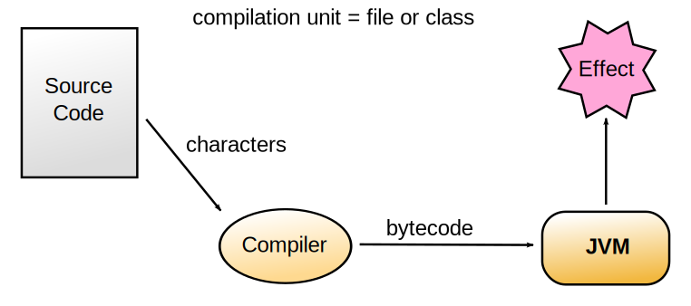
3.1.2.3 Clojure Evaluation
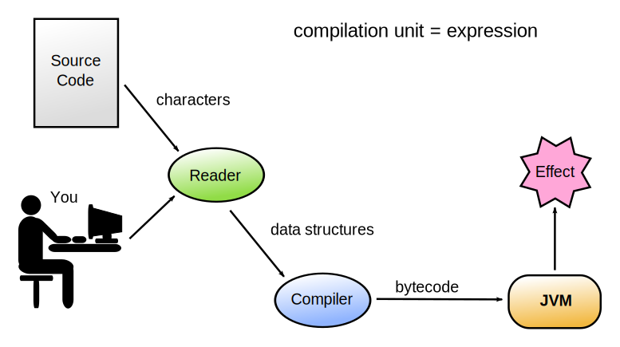
3.1.3 Basic Syntax
3.1.3.1 Operation Forms
(op ... )
- op can be either:
- special operator or macro
- expression which yields a function
- more generally, something invocable
- more generally, something invocable
- special operator or macro
3.1.3.2 Structure vs. Semantics
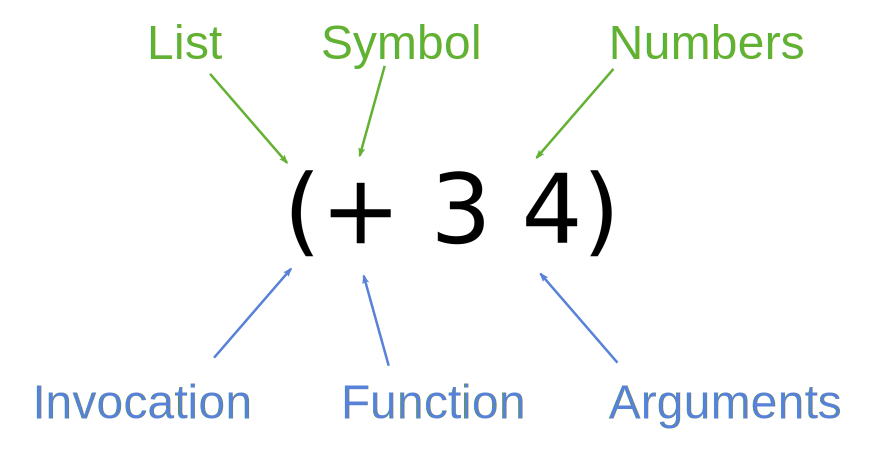
3.1.3.3 Literals (1)
42 ; Long 6.022e23 ; Double 42N ; BigInt 1.0M ; BigDecimal 22/7 ; Ratio "hello" ; String \e ; Character
3.1.3.4 Literals (2)
true false ; Booleans nil ; null + Fred *bob* ; Symbols :alpha :beta ; Keywords
3.1.3.5 Data Structures
(4 :alpha 3.0) ; List [2 "hello" 99] ; Vector {:a 1, :b 2} ; Map #{alice jim bob} ; Set
- Note: commas are whitespace
3.1.3.6 Reader Macros
| Reader Macro | Expansion |
|---|---|
| 'foo | (quote foo) |
| #'foo | (var foo) |
| @foo | (deref foo) |
| #(+ % 5) | (fn [x] (+ x 5)) |
3.1.4 Discoverability of the Environment
3.1.4.1 doc
user=> (use 'clojure.repl) user=> (doc when) ;; ------------------------- ;; clojure.core/when ;; ([test & body]) ;; Macro ;; Evaluates test. If logical true, evaluates ;; body in an implicit do. ;;=> nil
3.1.4.2 find-doc
user=> (find-doc "sequence") ;; ... all definitions with "sequence" ;; in their documentation ... ;;=> nil
3.1.4.3 apropos
user=> (apropos "map") ;;=> (sorted-map ns-unmap zipmap map mapcat ;; sorted-map-by map? amap struct-map ;; proxy-mappings pmap map-indexed ;; ns-map array-map hash-map)
3.1.4.4 source
user=> (source take) ;; (defn take ;; "Returns a lazy sequence of the first n items ;; in coll, or all items if there are fewer than n." ;; {:added "1.0" ;; :static true} ;; [n coll] ;; (lazy-seq ;; (when (pos? n) ;; (when-let [s (seq coll)] ;; (cons (first s) (take (dec n) (rest s))))))) ;;=> nil
3.1.4.5 dir
user=> (dir clojure.repl) ;; apropos ;; demunge ;; dir ;; dir-fn ;; doc ;; find-doc ;; pst ;; root-cause ;; set-break-handler! ;; source ;; source-fn ;; stack-element-str ;; thread-stopper ;;=> nil
3.1.5 Exercises
3.1.5.1 Exercise: Basic Math
- Find the product of 314 and 159 using the REPL.
3.1.5.2 Exercise: Basic Math Solution
- Find the product of 314 and 159 using the REPL.
user=> (* 314 159) ;=> 49926
3.1.5.3 Exercise: Prefix Notation
- Transform the following expression into Clojure code: (42 + 17 * 9) / 12
3.1.5.4 Exercise: Prefix Notation Solution
- Transform the following expression into Clojure code: (42 + 17 * 9) / 12
user=> (/ (* (+ 42 17) 9) 12) ;=> 177/4
3.2 Functions
3.2.1 Motivation
- Clojure is a functional language
- Functions are a first-class abstraction
- Ubiquitous support for high-order functions
- Core code (almost) entirely pure functions
- i.e., no side-effects
- The obvious place to start…
3.2.2 Functions
- Functions are first-class abstractions in Clojure
- Can be stored, passed as argument, invoked
fncreates a function with named parameters and body
;; params body ;; --------- --------------- (fn [message] (print message) ) ;;=> #<user$eval484$fn__485@45d1c3cd>
3.2.3 Invoking Functions
(op ...)- Invoke a function with
fnitself in function position
( (fn [message] (print message)) ; Operation "Hello world!" ; Arguments ) ;; Hello world!
3.2.3.1 Instructor notes notes
- The extra whitespace helps show the structure
- Normally we would not use so much whitespace
3.2.4 Naming functions
fnmakes anonymous functions- Store function in a named Var for later use
- Invoke as list with name in function position
(def messenger (fn [msg] (print msg))) ;;=> #'user/messenger (defn messenger [msg] (print msg)) ;;=> #'user/messenger (messenger "Hello world!") ;; Hello world!
3.2.5 let
letbinds symbols to immutable values- Values may be literals or expressions
- Bound symbols are available in lexical scope
(defn messenger [msg] (let [a 7 b 5 c (capitalize msg)] (println a b c) ) ; end of 'let' scope ) ; end of function
3.2.5.1 Notes notes
- Again, extra whitespace to show structure
3.2.6 Multi-arity functions
- Can overload function by arity (number of arguments)
- Each arity is a list
([args*] body*) - One form can invoke another
(defn messenger ;; no args, call self with default msg ([] (messenger "Hello world!")) ;; one arg, print it ([msg] (print msg))) (messenger) ;; Hello world! (messenger "Hello class!") ;; Hello class!
3.2.7 Variadic functions
- Variadic: function of indefinite arity
- Only one allowed when overloading on arity
&symbol in params- Next param collects all remaining args
- Collected args represented as sequence
(defn messenger [greeting & who] (print greeting who)) (messenger "Hello" "world" "class") ;; Hello (world class)
3.2.7.1 Notes notes
- Sequences look and behave like lists
3.2.8 apply
- Invokes function on arguments
- Final argument is a sequence
- "Unpacks" remaining arguments from a sequence
(let [a 1 b 2 more '(3 4)] (apply f a b more)) ;; this invokes (f 1 2 3 4)
3.2.9 apply
;; & puts rest of args into sequence (defn messenger [greeting & who] ;; apply gets args out of sequence (apply print greeting who)) (messenger "Hello" "world" "class") ;; Hello world class
3.2.9.1 Notes notes
- Similar to
*splatin Ruby
3.2.10 Closures
fn"closes" over surrounding lexical scope- Creates a closure
- Closed-over references persist beyond lexical scope
(defn messenger-builder [greeting] (fn [who] (print greeting who))) ; closes over greeting ;; greeting provided here, then goes out of scope (def hello-er (messenger-builder "Hello")) ;; greeting still available because hello-er is closure (hello-er "world!") ;; Hello world!
3.2.11 Function literals
- Terse form
#()for short fns defined inline- Single argument:
% - Multiple args:
%1,%2,%3, … - Variadic:
%&for remaining args
- Single argument:
;; A function to square numbers (def square #(* % %)) ;; A function to get the sum of squares (def sum-of-squares #(+ (square %1) (square %2)))
3.2.12 Exercise: Greeting
- Make a function that takes a greeting and one to three number of people and greets them appropriately. Here's some example output.
(messenger "Hello" "Clinton") ;; Hello, Clinton! (messenger "Hello" "Clinton" "Alan") ;; Hello, Clinton and Alan! (messenger "Hello" "Clinton" "Alan" "all of you") ;; Hello, Clinton, Alan, and all of you!
3.2.13 str will be necessary to make this work.
3.2.14 Exercise: Greeting Solution
(defn messenger ([greeting who] (str greeting ", " who "!")) ([greeting who1 who2] (str greeting ", " who1 " and " who2 "!")) ([greeting who1 who2 who3] (str greeting ", " who1 ", " who2 ", and " who3 "!")))
3.3 Names and Namespaces
3.3.1 Namespace Concepts
3.3.1.1 Why Namespaces?
- Re-use common names in different contexts
- e.g. clojure.core/replace and clojure.string/replace
- e.g. clojure.core/replace and clojure.string/replace
- Separate application "layers" or "components"
- Libraries
- Separate "public API" and "internal implementation"
3.3.1.2 Namespace-Qualified Vars
;; In the namespace "foo.bar" (defn hello [] (println "Hello, World!")) ;; In another namespace (foo.bar/hello) ; namespace-qualified
3.3.1.3 Namespace Operations
- Load: find source on classpath & eval it
- Alias: make shorter name for namespace-qualified symbols
- Refer: copy symbol bindings from another namespace into current namespace
- Import: make Java class names available in current namespace
3.3.2 ns macro
3.3.2.1 ns Declaration
- Creates namespace and loads, aliases what you need
- At top of file
- At top of file
- Refers all of
clojure.core
- Imports all of
java.lang
;; in file foo/bar/baz_quux.clj (ns foo.bar.baz-quux)
3.3.2.2 require
- Loads the namespace if not already loaded
- Argument is a symbol, must be quoted
- Argument is a symbol, must be quoted
- Have to refer to things with fully-qualified names
(ns my-ns (:require clojure.set)) ;;=> nil (clojure.set/union #{1 2} #{2 3 4}) ;;=> #{1 2 3 4}
3.3.2.3 require :as
- Loads the namespace if not already loaded
- Argument is a vector, must be quoted
- Argument is a vector, must be quoted
- Aliases the namespace to alternate name
(ns my-ns (:require [clojure.set :as set])) ;;=> nil ;; "set" is an alias for "clojure.set" (set/union #{1 2} #{2 3 4}) ;;=> #{1 2 3 4}
3.3.2.4 use
- Loads the namespace if not already loaded
- Argument is a symbol, must be quoted
- Argument is a symbol, must be quoted
- Refers all symbols into current namespace
- Warns when symbols clash
3.3.2.5 use Example
(ns my-ns (:use clojure.string)) ;; WARNING: reverse already refers ;; to: #'clojure.core/reverse in ;; namespace: user, being reversed ;; by: #'clojure.string/reverse ;; ... ;;=> nil (reverse "hello") ;;=> "olleh"
3.3.2.6 use :only
- Loads the namespace if not already loaded
- Argument is a vector, must be quoted
- Argument is a vector, must be quoted
- Refers only specified symbols into current namespace
(ns my-ns (:use [clojure.string :only (join)])) ;;=> nil (join "," [1 2 3]) ;;=> "1,2,3"
3.3.2.7 import
- Makes Java classes available w/o package prefix in current namespace
- Argument is a list, quoting is optional
- Argument is a list, quoting is optional
- Does not support aliases/renaming
- Does not support Java's
import *
(ns my-ns (:import (java.io FileReader File)) ;;=> nil (FileReader. (File. "readme.txt")) ;;=> #<FileReader ...>
3.3.2.8 ns Complete Example
(ns name (:require [some.ns.foo :as foo] [other.ns.bar :as bar]) (:use [this.ns.baz :only (a b c)] [that.ns.quux :only (d e f)]) (:import (java.io File FileWriter) (java.net URL URI)))
3.3.2.9 Namespaces and Files
- For require/use to work, have to find code defining namespace
- Clojure converts namespace name to path and looks on CLASSPATH
- Dots in namespace name become /
- Hyphens become underscores
- Dots in namespace name become /
- Idiomatic to define namespace per file
3.3.2.10 Namespaces in the REPL
in-nsswitches to namespace
- Creates namespace if it doesn't exist
- Creates namespace if it doesn't exist
- Argument is a symbol, must be quoted
- REPL always starts in namespace "user"
user=> (in-ns 'foo.bar.baz) ;;=> nil foo.bar.baz=>
3.4 Working with Java
3.4.1 Invoking Java code
- Clojure provides operational forms for Java invocation
| Task | Java | Clojure |
|---|---|---|
| Instantiation | new Widget("foo") | (Widget. "foo") |
| Instance method | rnd.nextInt() | (.nextInt rnd) |
| Instance field | object.field | (.-field object) |
| Static method | Math.sqrt(25) | (Math/sqrt 25) |
| Static field | Math.PI | Math/PI |
3.4.2 Chaining access
| Language | Syntax |
|---|---|
| java | person.getAddress().getZipCode() |
| clojure | (.getZipCode (.getAddress person)) |
| clojure sugar | (.. person getAddress getZipCode) |
3.4.2.1 Notes notes
- Just a taste of macros
- Clojure has fewer parens than Java!
3.4.3 Atomic data types
| Type | Example | Java equivalent |
|---|---|---|
| string | "foo" | String |
| character | \f | Character |
| regex | #"fo*" | Pattern |
| integer | 42 | Long |
| arbitrary-precision integer | 42N | clojure.lang.BigInt |
| double | 3.14159 | Double |
| arbitrary-precision decimal | 3.14159M | BigDecimal |
3.4.3.1 Notes notes
- Clojure types are Java types
- clojure.lang.BigInt fixes bugs in Java BigInteger
3.4.3.2 Atomic data types
| Type | Example | Java equivalent |
|---|---|---|
| boolean | true | Boolean |
| nil | nil | null |
| symbol | foo | clojure.lang.Symbol |
| keyword | :foo | clojure.lang.Keyword |
3.4.3.3 Composite data types
| Type | Example | Java equivalent |
|---|---|---|
| list | (1 2 3) | java.util.List* |
| vector | [4 5 6] | java.util.List* |
| map | {:a 1 :b 2} | java.util.Map* |
| set | #{3 7 9} | java.util.Set* |
- *read-only
3.4.3.4 Java methods vs functions
- Java methods are not Clojure functions
- Can't store them, pass them as arguments
- Can wrap them in functions when necessary
;; make a function to invoke .length on arg (fn [obj] (.length obj))
3.4.4 Generating sound with javax.sound.midi
(ns tutorial.midi (:import (javax.sound.midi MidiSystem Synthesizer))) (defn play-a-note [note velocity duration] (with-open [synth (doto (MidiSystem/getSynthesizer) .open)] (let [channel (aget (.getChannels synth) 0)] (.noteOn channel note velocity) (Thread/sleep duration)))) (play-a-note 60 127 3000)
3.4.4.1 Exercise: Make Some Noise!
- Find the code in
src/tutorial/midi.clj
- Can you play a progression of notes?
3.5 Collections
3.5.1 Overview
3.5.1.1 Wisdom of the Ancients
- "It is better to have 100 functions operate on one data structure than to have 10 functions operate on 10 data structures." - Alan J. Perlis
3.5.1.2 Working With Data
- Clojure provides extensive facilities for representing and manipulating data
- Small number of data structures
- Seq abstraction common across data structures & more
- Large library of functions across all of them
3.5.1.3 Immutability
- The values of simple types are immutable
- 4, 0.5, true
- In Clojure, the values of compound data structures are immutable too
- Key to Clojure's concurrency model
- Code never changes values, generates new ones to refer to instead
- Persistent data structures ensure this is efficient in time and space
3.5.1.4 Persistent Data Structures
- New values built from old values + modifications
- New values are not full copies
- New value and old value are both available after 'changes'
- Collection maintains its performance guarantees for most operations
- All Clojure data structures are persistent
3.5.1.5 Example: Linked List
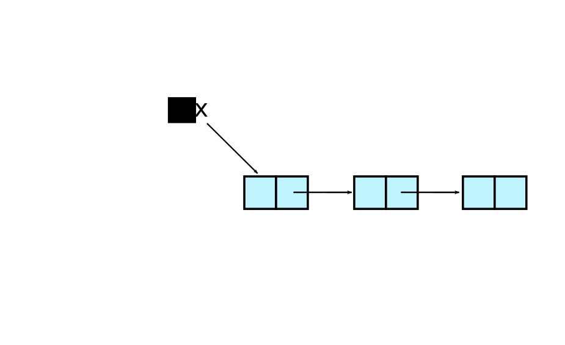
3.5.1.6 Example: Linked List
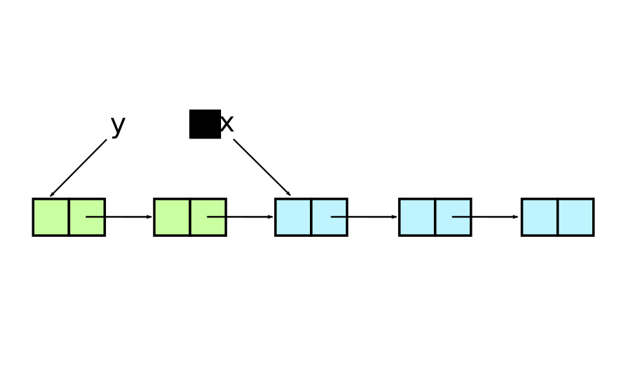
3.5.1.7 Example: Binary Tree
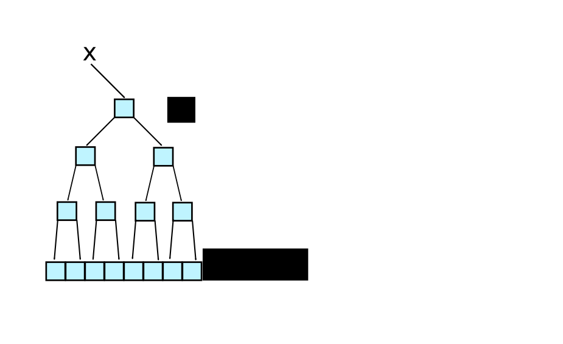
3.5.1.8 Example: Tree Structure
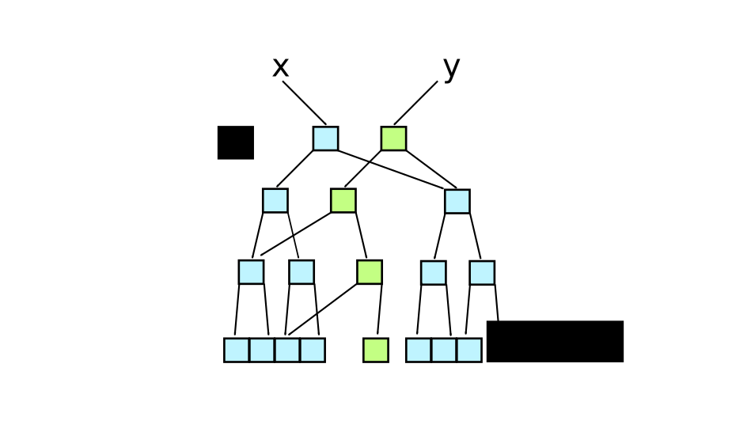
3.5.1.9 Concrete Data Structures
- Sequential
- List, Vector
- Associative
- Map, Vector
- Both types support declarative destructuring
3.5.2 Sequential
3.5.2.1 Lists
- Singly-linked lists
() ;=> the empty list (1 2 3) ; error because 1 not function (list 1 2 3) ;=> (1 2 3) '(1 2 3) ;=> (1 2 3) (conj '(2 3) 1) ;=> (1 2 3)
3.5.2.2 Vectors
- Indexed, random-access, array-like
[] ;=> the empty vector [1 2 3] ;=> [1 2 3] (vector 1 2 3) ;=> [1 2 3] (vec '(1 2 3)) ;=> [1 2 3] (nth [1 2 3] 0) ;=> 1 (conj [1 2] 3) ;=> [1 2 3]
3.5.3 Associative
3.5.3.1 Maps
- Key => value, hash table, dictionary
{} ;=> the empty map
{:a 1 :b 2} ;=> {:a 1 :b 2}
(:a {:a 1 :b 2}) ;=> 1
({:a 1 :b 2} :a) ;=> 1
(assoc {:a 1} :b 2) ;=> {:a 1 :b 2}
(dissoc {:a 1} :a) ;=> {}
(conj {} [:a 1]) ;=> {:a 1}
3.5.3.2 Nested Access
- Helper functions access data via path specified by keys
(def jdoe {:name "John Doe", :address {:zip 27705}}) (get-in jdoe [:address :zip]) ;=> 27705 (assoc-in jdoe [:address :zip] 27514) ;;=> {:name "John Doe", :address {:zip 27514}} (update-in jdoe [:address :zip] inc) ;;=> {:name "John Doe", :address {:zip 27706}}
3.5.3.3 Sets
- Set of distinct values
#{} ;=> the empty set
#{:a :b} ;=> #{:a :b}
(#{:a :b} :a) ;=> :a
(conj #{} :a) ;=> #{:a}
(contains? #{:a} :a) ;=> true
3.5.3.4 clojure.set Examples
(require '[clojure.set :as set]) (set/union #{:a} #{:b}) ;=> #{:a :b} (set/difference #{:a :b} #{:a}) ;=> #{:b} (set/intersection #{:a :b} #{:b :c}) ;=> #{:b}
3.5.4 Destructuring
3.5.4.1 Destructuring
- Declarative way to pull apart compound data
- vs. explicit, verbose access
- Works for both sequential and associative data structures
- Nests for deep, arbitrary access
3.5.4.2 Where You Can Destructure
- Destructuring works in
fnanddefnparams,letbindings- And anything built on top of them
3.5.4.3 Sequential Destructuring
- Provide vector of symbols to bind by position
- Binds to
nilif there's no data
- Binds to
(def stuff [7 8 9 10 11]) ;=> #'user/stuff ;; Bind a, b, c to first 3 values in stuff (let [[a b c] stuff] (list (+ a b) (+ b c))) ;;=> (15 17) (let [[a b c d e f] stuff] (list d e f)) ;;=> (10 11 nil)
3.5.4.4 Sequential Destructuring
- Can get "everything else" with
&- Value is a sequence
(def stuff [7 8 9 10 11]) ;=> #'user/stuff (let [[a & others] stuff] (println a) (println others)) ;; 7 ;; (8 9 10 11) ;;=> nil
3.5.4.5 Sequential Destructuring
- Idiomatic to use
_for values you don't care about
(def stuff [7 8 9 10 11]) ;=> #'user/stuff (let [[_ & others] stuff] ; skip the first one (println others))) ;; (8 9 10 11) ;;=> nil
3.5.4.6 Associative Destructuring
- Provide map of symbols to bind by key
- Binds to
nilif there's no value
- Binds to
(def m {:a 7 :b 4}) ;=> #'user/m (let [{a :a, b :b} m] [a b]) ;;=> [7 4]
3.5.4.7 Associative Destructuring
- Keys can be inferred from vector of symbols to bind
(def m {:a 7 :b 4}) ;=> #'user/m (let [{:keys [a b]} m] [a b]) ;;=> [7 4] (let [{:keys [a b c]} m] [a b c]) ;;=> [7 4 nil]
3.5.4.8 Associative Destructuring
- Use
:orto provide default values for bound keys
(def m {:a 7 :b 4}) ;=> #'user/m (let [{:keys [a b c] :or {c 3}} m] [a b c]) ;;=> [7 4 3]
3.5.4.9 Named Arguments
- Applying vector of keys to
&binding emulates named args
(defn game [planet & {:keys [human-players computer-players]}] (println "Total players: " (+ human-players computer-players))) (game "Mars" :human-players 1 :computer-players 2) ;; Total players: 3
3.5.5 Sequences
3.5.5.1 Sequences
- Abstraction for representing iteration
- Backed by a data structure or a function
- Can be lazy and/or "infinite"
- Foundation for large library of functions
3.5.5.2 Sequence API
(seq coll)- If collection is non-empty, return seq object on it, else
nil - Can't recover input source from seq
- If collection is non-empty, return seq object on it, else
(first coll)- Returns the first element
(rest coll)- Returns a sequence of the rest of the elements
(cons x coll)- Returns a new sequence: first is x, rest is coll
3.5.5.3 Sequences Over Structures
- Can treat any Clojure data structure as a seq
- Associative structures treated as sequence of pairs
(def a-list '(1 2 3)) ;=> #'user/a-list
3.5.5.4 Sequence Over Structure
(first a-list) ;=> 1
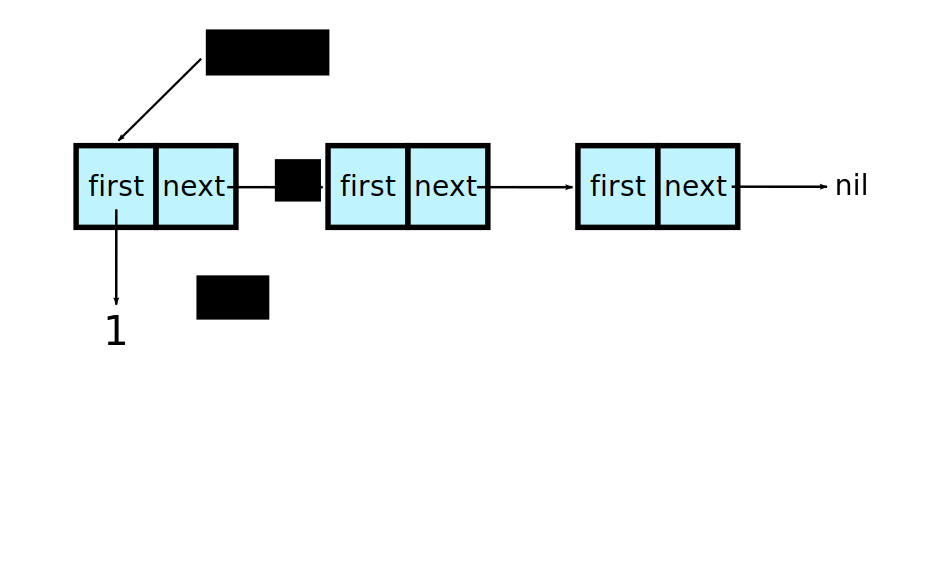
3.5.5.5 Sequence Over Structure
(second a-list) ;=> 2
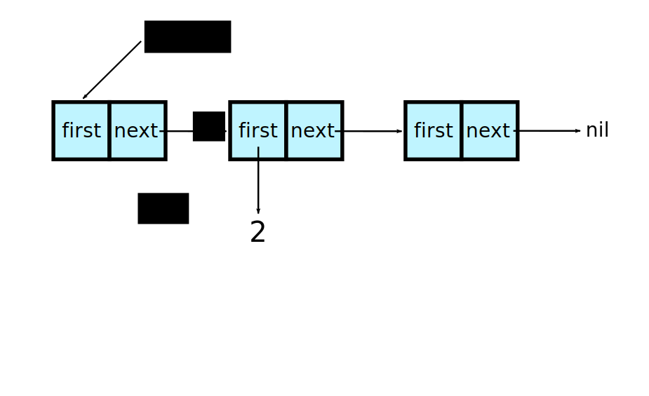
3.5.5.6 Sequence Over Structure
(rest a-list) ; seq
3.5.5.7 Sequences Over Functions
- Can map a generator function to a seq
- Seq is lazy, can be infinite
- Can process more than fits in memory
(def a-range (range 1 4)) ;=> #'user/a-range
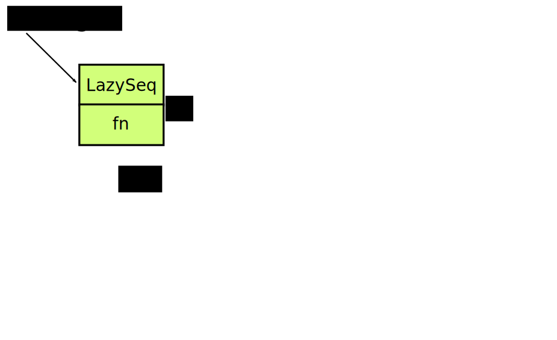
3.5.5.8 Sequences Over Functions
(first a-range) ;=> 1
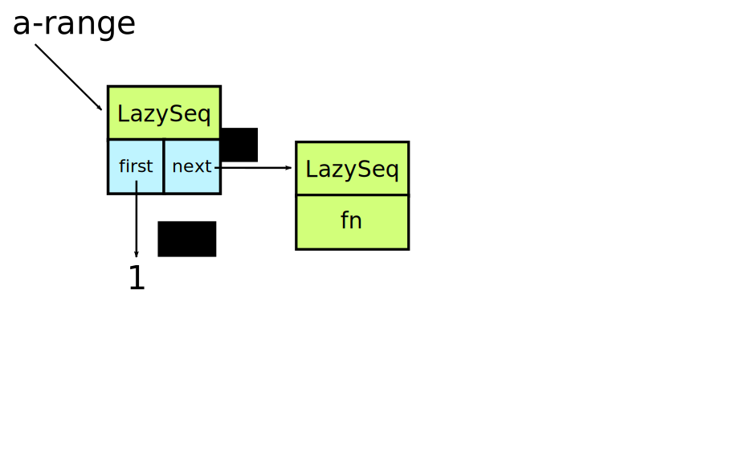
3.5.5.9 Sequences Over Functions
(second a-range) ;=> 2
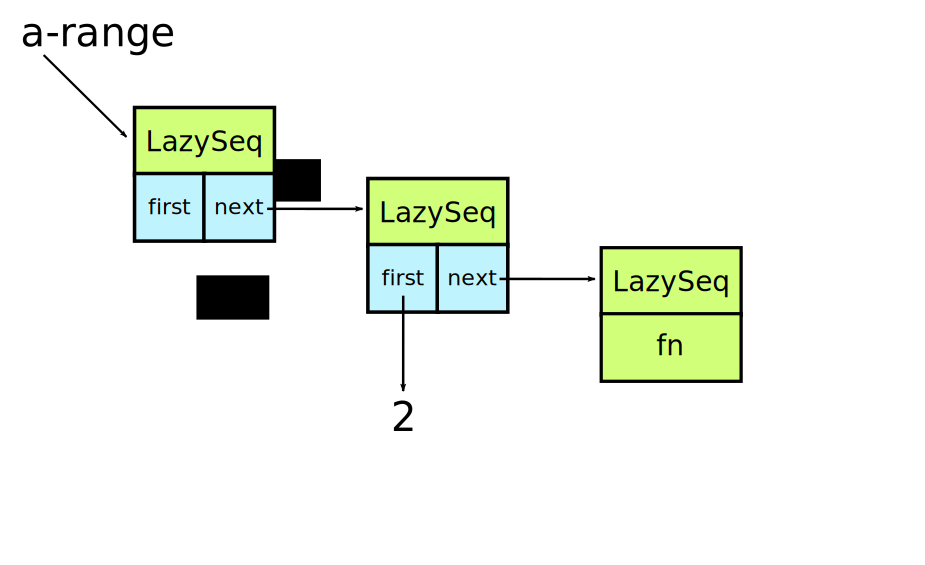
3.5.5.10 Sequences Over Functions
(rest a-range) ; seq
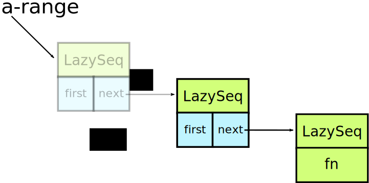
3.5.5.11 Sequences in the REPL
- REPL always prints sequences with parens
- But it's not a list!
- Infinite sequences take a long time to print
(set! *print-length* 10) ; only print 10 things
3.5.5.12 Sequence Library
- Generators
- list, vector, map, SQL ResultSet, Stream, Directory, Iterator, XML, …
- Operations
- map, filter, reduce, count, some, replace, …
- Generators * Operations = Power!
3.5.5.13 Creating a Sequence
(seq [1 2 3]) ;=> (1 2 3) ; not a list (range) ;=> (0 1 2 ... infinite (range 3) ;=> (0 1 2) (range 1 7 2) ;=> (1 3 5) (iterate #(* 2 %) 2) ;=> (2 4 8 16 ... infinite (re-seq #"[aeiou]" "clojure") ;=> ("o" "u" "e")
3.5.5.14 Seq in, Seq out
(take 3 (range)) ;=> (0 1 2) (drop 3 (range)) ;=> (3 4 5 ... infinite (map #(* % %) [0 1 2 3]) ;=> (0 1 4 9) ; vector treated as seq (filter even? (range)) ;=> (0 2 4 6 ... infinite (apply str (interpose "," (range 3))) ;=> "0,1,2"
3.5.5.15 Using a Seq
(reduce + (range 4)) ;=> 6 (reduce + 10 (range 4)) ;=> 16 (into #{} "hello") ;=> #{\e \h \l \o} (into {} [[:x 1] [:y 2]]) ;=> {:x 1, :y 2} (some {2 :b 3 :c} [1 nil 2 3]) ;=> :b
3.5.5.16 Adopting the Sequence Mindset
- Sequence library surface space is big
- Most things you want to do are in there somewhere
- If you find yourself explicitly iterating, look for a function
- The Clojure Cheatsheet helps
- http://clojure.org/cheatsheet
3.5.5.17 The Fibonacci Sequence
(def fibs ; define a sequence called fibs... (map first ; that maps the first value of a pair across... (iterate ; a lazy, infinite sequnce that's generated by... (fn [[a b]] ; a function that destructures a pair of args... [b (+ a b)]) ; and returns the next pair in the sequence... [0 1]))) ; starting at [0 1] (take 5 fibs) ; consume as many as you'd like ;;=> (0 1 1 2 3)
3.5.6 Exercises
3.5.6.1 Exercise: What's That Song?
- Go back to
midi.cljfrom the previous exercise.
- Play the song in this data structure:
(def notes [{:note 60 :duration 1} {:note 62 :duration 1} {:note 64 :duration 1} {:note 60 :duration 1} {:note 60 :duration 1} {:note 62 :duration 1} {:note 64 :duration 1} {:note 60 :duration 1} {:note 64 :duration 1} {:note 65 :duration 1} {:note 67 :duration 2} {:note 64 :duration 1} {:note 65 :duration 1} {:note 67 :duration 2}])
3.5.6.2 Exercise: Improve Your Greeting
- Go back to your greeting code from the functions section. Change this so it works for any amount of people.
(messenger "Hello" "Clinton") ;; Hello, Clinton! (messenger "Hello" "Clinton" "Alan") ;; Hello, Clinton and Alan! (messenger "Hello" "Clinton" "Alan" "all of you") ;; Hello, Clinton, Alan, and all of you! (messenger "Hello" "Clinton" "Alan" "Rich" "all of you") ;; Hello, Clinton, Alan, Rich, and all of you!
last,butlast,list*, andclojure.string/joinwill come in very helpful in this exercise.
3.5.6.3 Exercise: Greeting Solution
(defn messenger ([greeting who] (str greeting ", " who "!")) ([greeting who1 who2] (str greeting ", " who1 " and " who2 "!")) ([greeting who1 who2 & whos] (str greeting ", " (clojure.string/join ", " (butlast (list* who1 who2 whos))) ", and " (last whos) "!")))
3.6 Flow Control
3.6.1 Introduction
3.6.1.1 Expressions in Clojure
- Everything in Clojure is an expression
- Always returns a value
- A block of multiple expressions returns the last value
- E.g.,
let,do,fn
- E.g.,
- Expressions exclusively for side-effects return
nil
- Always returns a value
3.6.1.2 Flow Control Expressions
- Flow control operators are expressions too
- Composable, can use them anywhere
- Less duplicate code
- Fewer intermediate variables
- Less duplicate code
3.6.1.3 Truthiness
(if true :truthy :falsey) ;;=> :truthy (if (Object.) :truthy :falsey) ; objects are true ;;=> :truthy (if [] :truthy :falsey) ; empty collections are true ;;=> :truthy (if false :truthy :falsey) ;;=> :falsey (if nil :truthy :falsey) ; nil is false ;;=> :falsey (if (seq []) :truthy :falsey) ; seq on empty coll is nil ;;=> :falsey
3.6.1.4 if
(str "2 is " (if (even? 2) "even" "odd")) ;;=> "2 is even" ; else-expression is optional (if (true? false) "impossible!") ;;=> nil
3.6.1.5 if/do
- Multiple expressions per branch
- Last value in branch returned
(if (even? 5) (do (println "even") true) (do (println "odd") false)) ;=> false ;; odd
3.6.1.6 cond
- Series of tests and expressions
:elseexpression is optional
(cond test1 expression1 test2 expression2 ... :else else-expression)
3.6.1.7 cond
(let [x 5] (cond (< x 2) "x is less than 2" (< x 10) "x is less than 10")) ;;=> "x is less than 10"
3.6.1.8 cond with :else
(let [x 11] (cond (< x 2) "x is less than 2" (< x 10) "x is less than 10" :else "x is greater than or equal to 10")) ;;=> "x is greater than or equal to 10"
3.6.2 Flow Control Exercise
3.6.2.1 Exercise: Improve Your Greeting Again
- Go back to your greeting code. It is kind of a complex mess. Use flow control to make it awesome.
3.6.2.2 Exercise: One Greeting Solution
(defn messenger [greeting & whos] (let [x (count whos)] (apply str greeting ", " (cond (= x 0) ["!"] (< x 3) (conj (vec (interpose " and " whos)) "!") :else (concat (vec (interpose ", " (butlast whos))) [", and " (last whos) "!"])))))
3.6.3 Iteration
3.6.3.1 Recursion and Iteration
- Clojure provides
loopand the sequence abstraction
loopis "classic" recursion
- Closed to consumers, lower-level
- Closed to consumers, lower-level
- Sequences represent iteration as values
- Consumers can partially iterate
- Consumers can partially iterate
3.6.3.2 doseq
- Iterates over a sequence
- Similar to Java's foreach loop
- Similar to Java's foreach loop
- If a lazy sequence,
doseqforces evaluation
(doseq [n (range 3)] (println n)) ;; 0 ;; 1 ;; 2 ;;=> nil
3.6.3.3 doseq with multiple bindings
- Similar to nested foreach loops
- Processes all permutations of sequence content
3.6.3.4 dotimes
- Evaluate expression n times
(dotimes [i 3] (println i)) ;; 0 ;; 1 ;; 2 ;;=> nil
3.6.3.5 while
- Evaluate expression while condition is true
(while (.accept socket) (handle socket))
3.6.3.6 Clojure's for
- List comprehension, NOT a for-loop
- Generator function for sequence permutation
(for [x [0 1] y [0 1]] [x y]) ;;=> ([0 0] [0 1] [1 0] [1 1]) ; seq
3.6.3.7 with-open
- JDK7 introduces try-with-resources
- Clojure provides
with-openfor similar purposes
(require '[clojure.java.io :as io]) (with-open [f (io/writer "/tmp/new")] (.write f "some text"))
3.7 HACK LIFE
- Clinton: @crnixon
- Alan: @alandipert